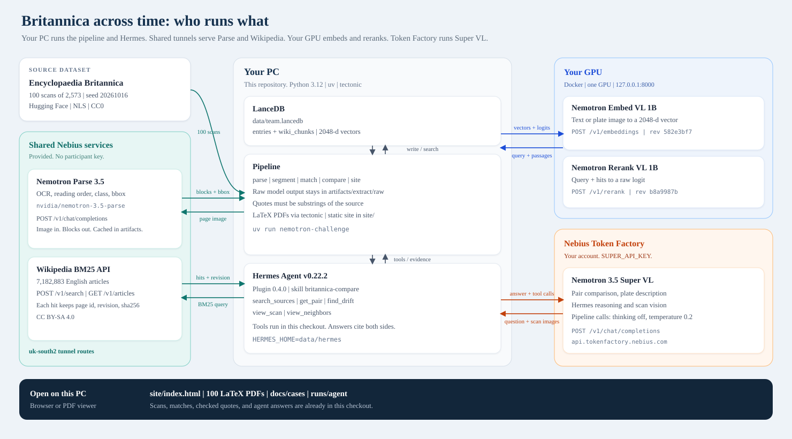
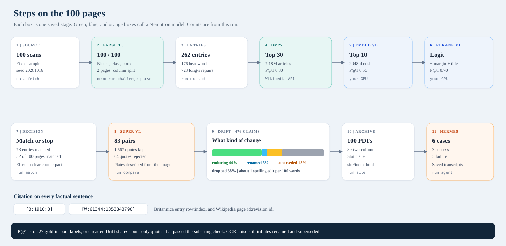
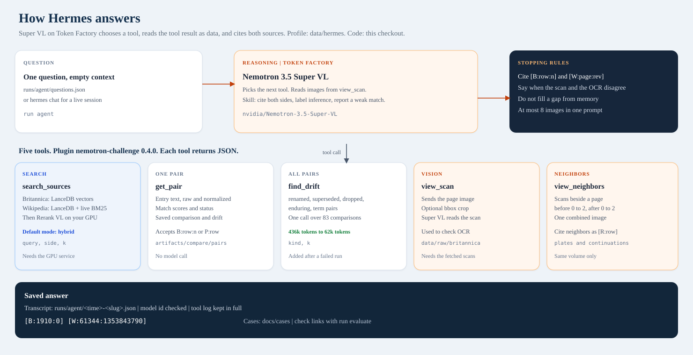

How it works
Three maps of this run. Green is a shared service, blue is your GPU, orange is Token Factory. Setup commands are in the repository README.
Who runs what

Steps

Hermes agent

Open the archive
The scans, matches, quotes, and agent answers in this checkout are the saved run. Start here, then follow the README if you rerun the models.